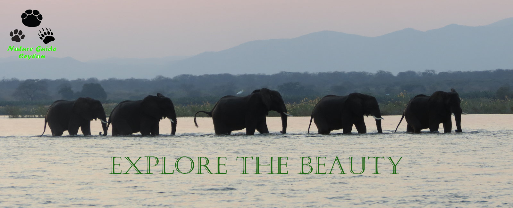

Sri Lankan Elephant
The Sri Lankan elephant (Elephas maximus maximus) is native to Sri Lanka and one of three recognised subspecies
of the Asian elephant. It is the type subspecies of the Asian elephant and was first described by Carl Linnaeus
under the binomial Elephas maximus in 1758. The Sri Lankan elephant population is now largely restricted to
the dry zone in the north, east and southeast of Sri Lanka.
Elephants are present in Udawalawe National Park,
Yala National Park, Lunugamvehera National Park, Wilpattu National Park and Minneriya National Park but also live
outside protected areas. It is estimated that Sri Lanka has the highest density of elephants in Asia. Human-elephant
conflict is increasing due to conversion of elephant habitat to settlements and permanent cultivation.
Sri Lankan elephants are the largest subspecies reaching a shoulder height of between 2 and 3.5 m (6.6 and 11.5 ft),
weigh between 2,000 and 5,500 kg (4,400 and 12,100 lb), and have 19 pairs of ribs. Their skin colour is darker than
of indicus and of ono on ears, face, trunk and belly.
Only 7% of males bear tusks. Average adult elephant tusks grow up to about 6 feet. It can weight up to 35 kg (77 lb).
Longest tusks of 7 feet 6 inches long was found in Millangoda Raja (1938-30 July 2011).
 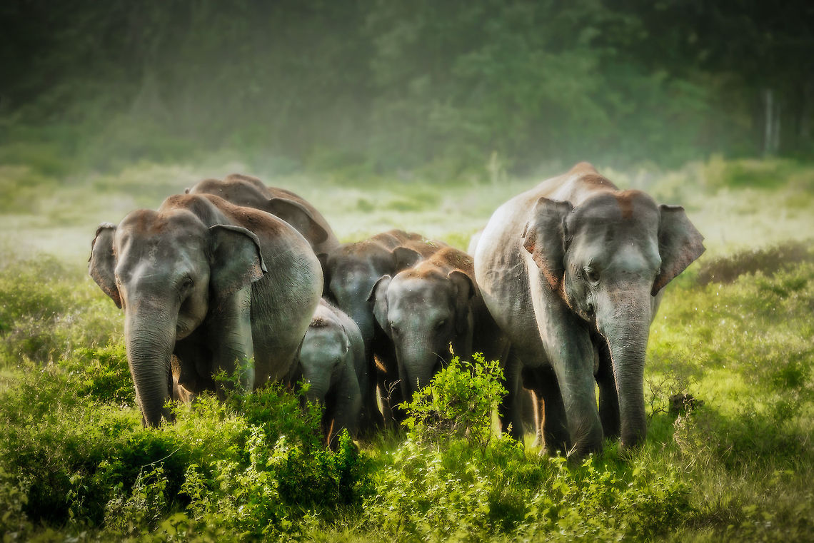
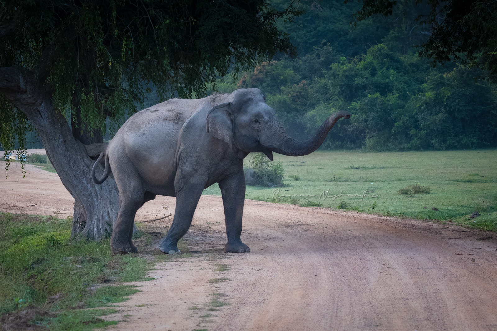
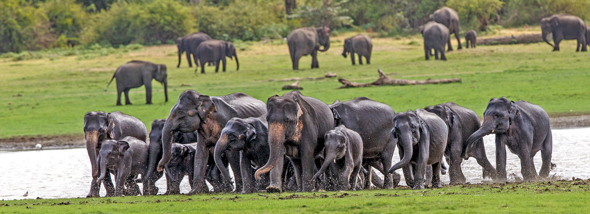
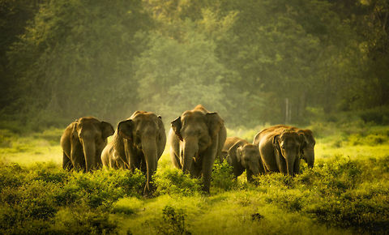
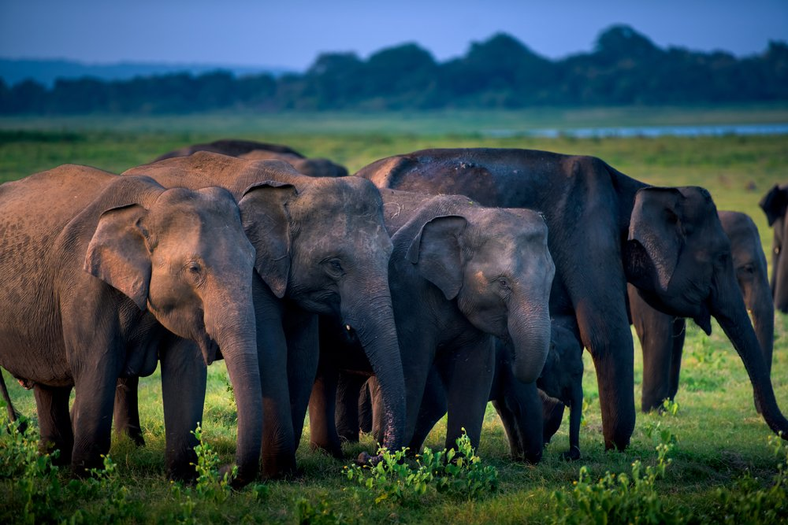
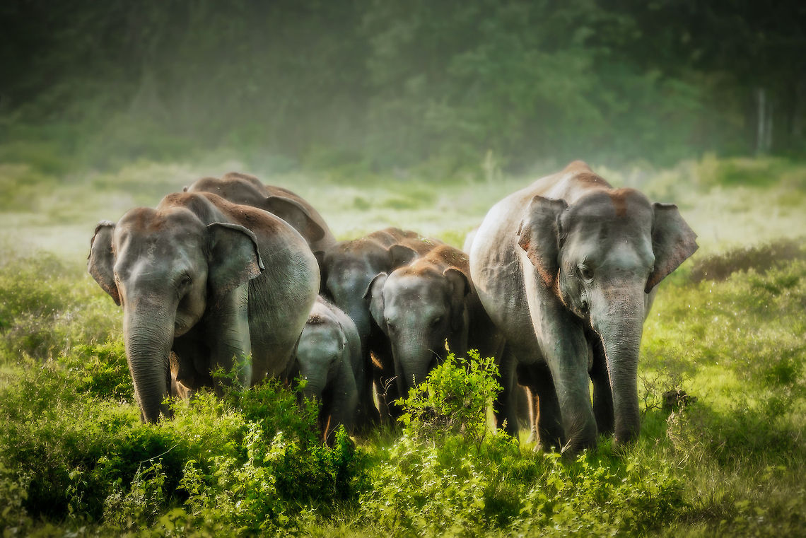
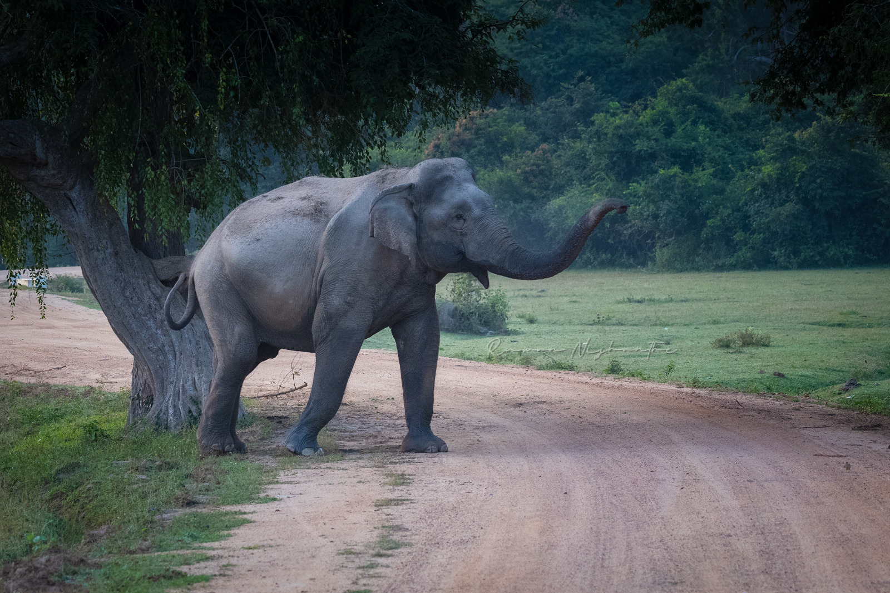
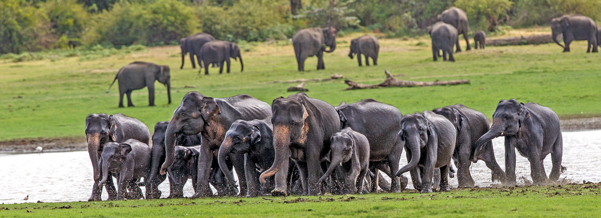
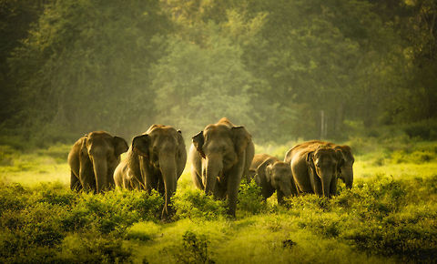
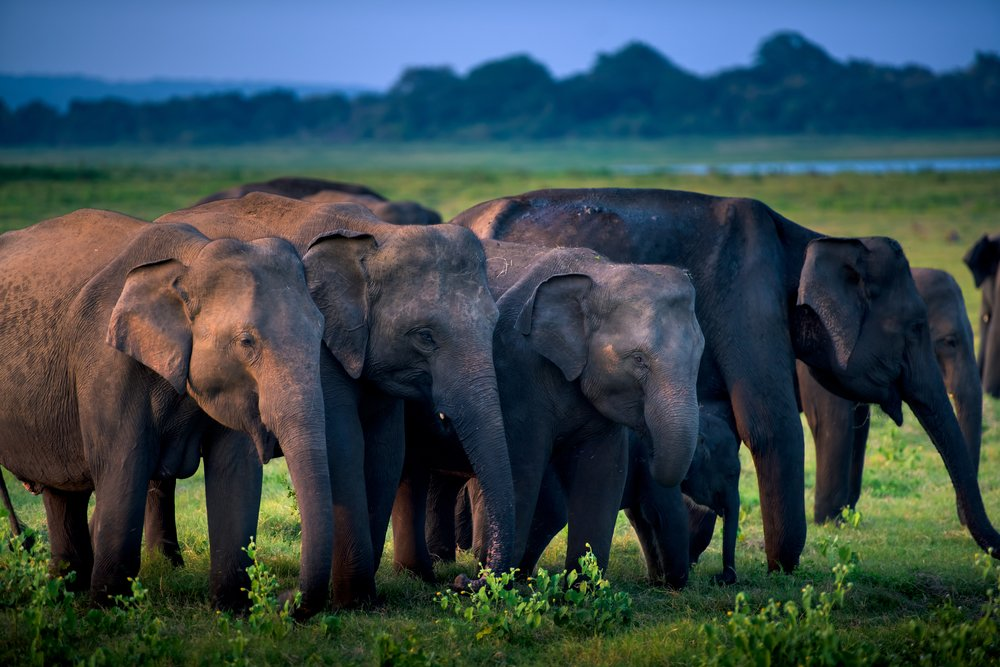
Human-elephant conflict (HEC) is a severe conservation, socio-economic and environmental issue of forests and ecosystems
in elephant inhabiting countries, including Sri Lanka. Due to the rapid growth of human and elephant populations, both struggles to share
limited land resources. The major causes and contexts of HEC in Sri Lanka you land use change, habitat loss due to human population
growth, crop raiding behavior, problem elephants, and changes in agriculture practices.
Since 2019, 125 people and 370 elephants have killed
annually on average due to the conflict. Also, Sri Lanka has recorded the highest annual elephant deaths and second-highest human deaths due
to HEC. The human death rate has increased by approximately 42% over previous three decades. The Sri Lankan government provides compensation
for death and disability of the human rubed by elephants and for elephant-damaged houses or properties. The Sri Lankan elephant (Elephas maximus maximus)
is an endangered subspecies. Its home range is restricted to 50 -150 km2 and depends on the availability of food, water, and shelter of the habitat in which
they live.
Various management strategies have been developed by the government and villagers to prevent and mitigate BRC. Today, Sri Lankan elephants are
protected under Sri Lankan law, with punishment by fines and jail terms. This article reviews the history, present status, and traditional conflict management
of HEC in Sri Lanka. We suggest a satellite data fusion approach with GIS modeling to identify risk zones of HEC to develop further protective measures for humans
and elephants.